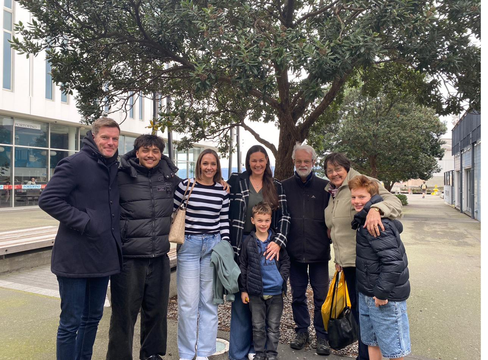
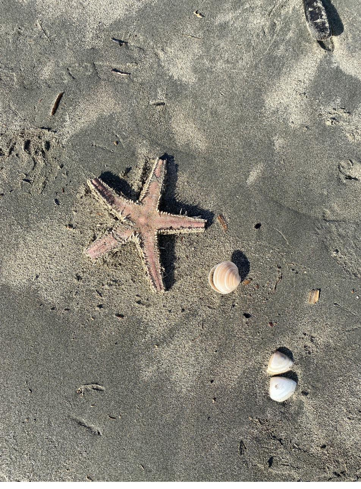
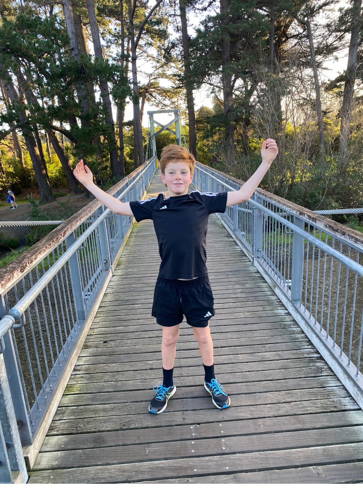
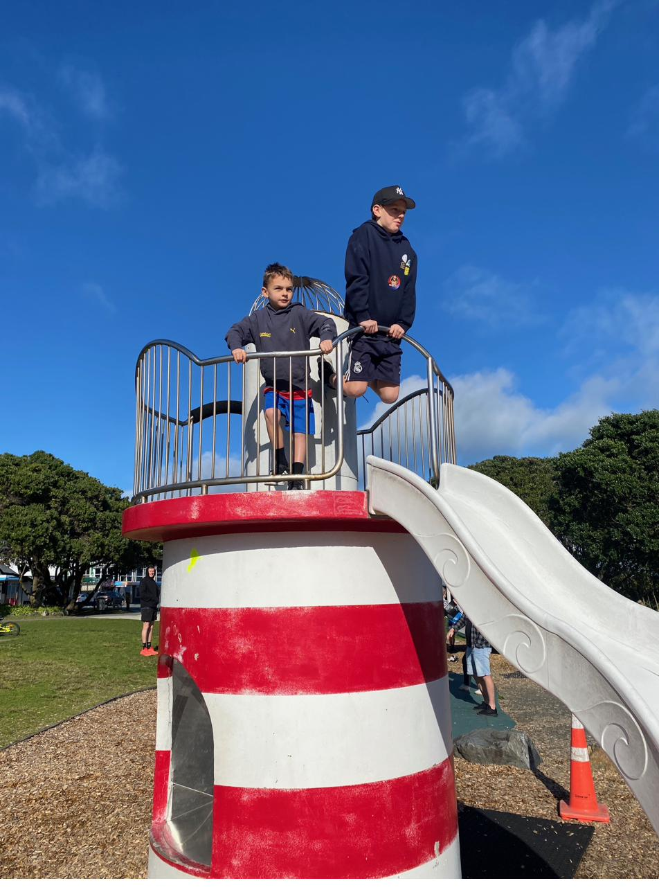
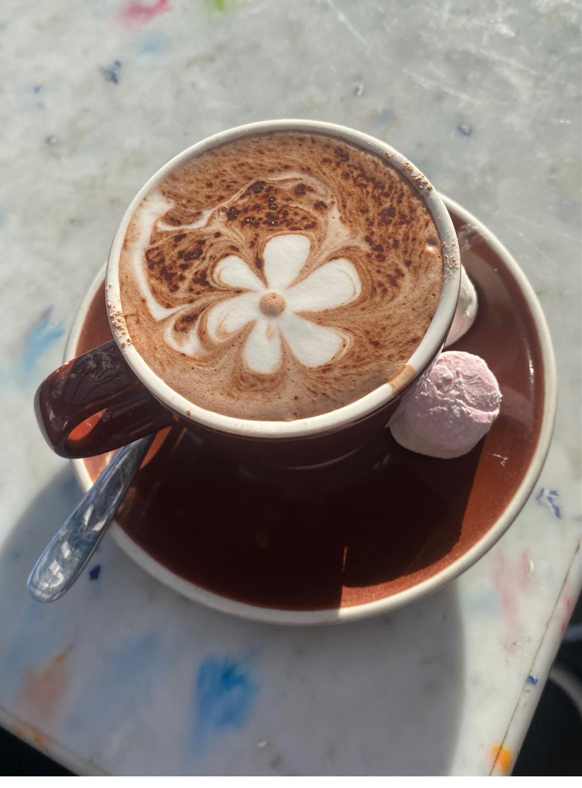
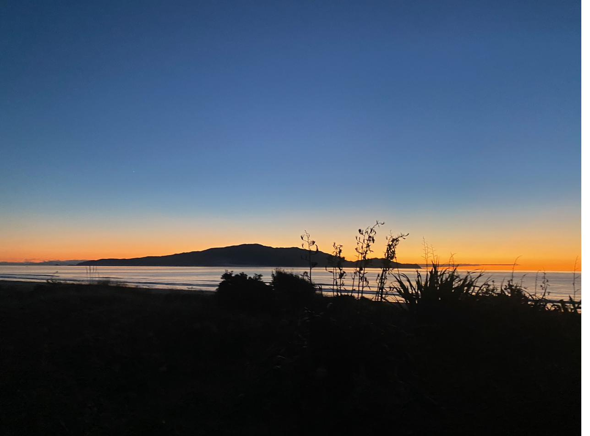
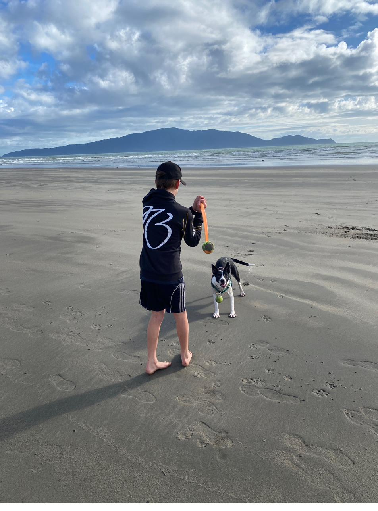
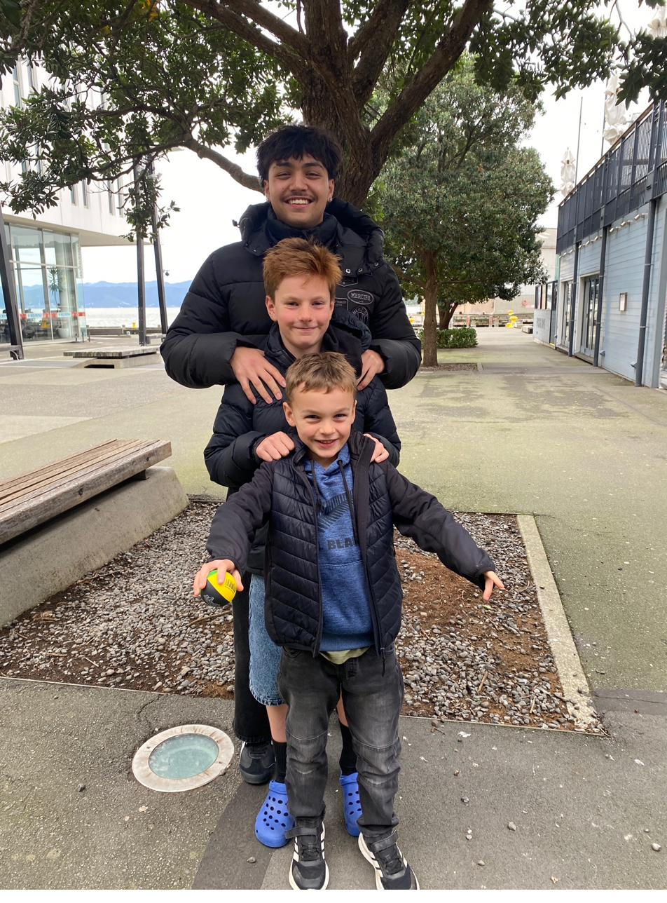

Geography

A harbour built by an earthquake
Wellington Harbour, Te Whanganui-a-Tara, sits on the Wellington Fault. Centuries of movement along that fault helped carve the deep, sheltered harbour the city is built around.
A school project exploring Te Whanganui-a-Tara — New Zealand's compact, hilly, harbour-hugging capital. Scroll down for cool facts, real photos from our trip, and a quiz to test what you've learned.
Nine bite-sized facts about the geography, wildlife and culture of New Zealand's windy capital — each paired with a photo from around the harbour and Kāpiti Coast.

Wellington Harbour, Te Whanganui-a-Tara, sits on the Wellington Fault. Centuries of movement along that fault helped carve the deep, sheltered harbour the city is built around.
Cook Strait squeezes wind between the North and South Islands like a funnel, giving Wellington the title of windiest city on Earth by average wind speed.

The beaches around Wellington and the nearby Kāpiti Coast are full of sea life — starfish, shellfish and shore birds all turn up at low tide.

Nearby Zealandia was the world's first fully-fenced urban ecosanctuary, keeping out predators so native birds like kākā, tūī and kererū can thrive again.

Playgrounds, promenades and picnic spots line Wellington's waterfront — even the play equipment takes inspiration from the lighthouses guarding the harbour entrance.

Wellington is famous for its café culture — locals say it has more cafés and restaurants per capita than any other city in the world.

Just north of the city, Kāpiti Island is a predator-free nature reserve — a striking silhouette on the horizon from the region's west coast beaches.

On a clear day you can see Kāpiti Island from the beach — it's one of New Zealand's most important offshore sanctuaries for native birds.

Wellington is home to the Beehive, the round, tiered Executive Wing of New Zealand's Parliament Buildings — one of the country's most recognisable landmarks.
A few shots from our own trip around Wellington and the Kāpiti Coast — replace these with your own photos as you go.
Six questions built from the facts above. Answer them all to get your wind rating.